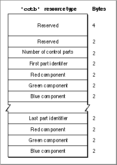

Legacy Document
Important: The information in this document is obsolete and should not be used for new development.
Important: The information in this document is obsolete and should not be used for new development.


The Control Color Table Resource
On color monitors, the Control Manager automatically draws control parts so that they match the colors of the controls used by system software.If you feel absolutely compelled to use nonstandard colors, the Control Manager
allows you to do so. Your application can specify these by creating a control color table ('cctb')resource; you must give the control color table resource for a control the
same resource ID as its control ('CNTL') resource, which is described on page 5-111. When you call theGetNewControlfunction to create the control, the Control Manager automatically attempts to load a control color table resource with the same resource ID as the control resource specified toGetNewControl. The Control Manager also creates
an auxiliary control record for the control; the auxiliary control record is described
on page 5-69.
Generally, you use a control color table resource for a control that you define in a control resource. To change a control's colors, or to use nonstandard colors in a control
- Note
- Using nonstandard colors in your controls may initially confuse
your users.
you create usingNewControl, create a control color table record and use theSetControlColor procedure.The control color table record is described on page 5-71; theSetControlColor procedureis described on page 5-94.A control color table resource is of type
'cctb'. All control color table resources must have resource ID numbers greater than 128.Figure 5-26 on the next page shows the format of a control color table resource. Note thatDisposeControl does not delete
a control color table resource; therefore, you should make each control color table resource purgeable.Figure 5-26 Structure of a compiled control color table (
'cctb') resource
You define a control color table resource by specifying these elements in a resource with the
'cctb' resource type:
- Reserved. Should always be set to 0.
- Reserved. Should always be set to 0.
- Number of control parts. For standard controls other than scroll bars, this should be set to 3, because these controls consist of a frame, a control body, and text. For scroll bars, this should be set to 12. A scroll bar consists of a frame, a body, and scroll box; each part of a scroll bar has various highlight and tinge colors associated with it. To create a control with more parts, you must create your own control definition function (as described in "Defining Your Own Control Definition Function" beginning on page 5-102) that recognizes additional parts.
- First part identifier. A value or constant that identifies the control's part to color. The part identifiers can be listed in any order. The scroll bar control definition function may use more than one part identifier to produce the actual colors used for each part of the scroll bar.
CONST cFrameColor = 0; {frame color; for scroll bars, used to produce } { foreground color for scroll arrows & gray area} cBodyColor = 1; {body color; for scroll bars, used to produce } { colors in the scroll box} cTextColor = 2; {text color; unused for scroll bars} cArrowsColorLight = 5; {Used to produce colors in arrows & scroll bar } { background color} cArrowsColorDark = 6; {Used to produce colors in arrows & scroll bar } { background color} cThumbLight = 7; {Used to produce colors in scroll box} cThumbDark = 8; {Used to produce colors in scroll box} cHiliteLight = 9; {Use same value as wHiliteColorLight in 'wctb'} cHiliteDark = 10; {Use same value as wHiliteColorDark in 'wctb'} cTitleBarLight = 11; {Use same value as wTitleBarLight in 'wctb'} cTitleBarDark = 12; {Use same value as wTitleBarDark in 'wctb'} cTingeLight = 13; {Use same value as wTingeLight in 'wctb'} cTingeDark = 14; {Use same value as wTingeDark in 'wctb'}
- Red component. An integer that represents the intensity of the red component of
the color to use when drawing this part of the control. In this and the next two elements, use 16-bit unsigned integers to give the intensity values of three additive primary colors.- Green component. An integer that represents the intensity of the green component of the color to use when drawing this part of the control.
- Blue component. An integer that represents the intensity of the blue component of the color to use when drawing this part of the control.
- Part identifier and red, green, and blue components for the next control part. You can list parts in any order in this resource. If the application specifies a part identifier that cannot be found, the Control Manager uses the colors for the control's first identifiable part. If a part is not listed in the control color table, the Dialog Manager draws it in its default color.